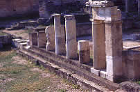
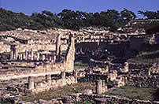
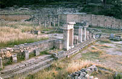
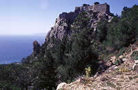

|
|
|
West Coast
and the Countryside |
|
When leaving Rhodes town, make Ialissos your first
port of call. The town is steeped in history and
bears the name of one of Helios's grandsons. It was one of
the first towns built on the island, along with Lindos
and Kamiros. You can visit the ruins of the 13th century Acropolis,
where you will find traces of the Athena Polias and Zeus Polios temples.
Filerimos can be found a few kilometres
further down the road, nestled in the middle of
a vast plain of cypress trees. It is still home to chapels marked
with the cross of the knights and the coat of
arms of Pierre d'Aubusson. You definitely must not miss out on the Church
of Our Lady, which dates back to the 14th century and comprises
four chapels, one of which can be traced back to the Byzantine
period.
Continue along the road until you reach the
Butterfly Valley, an idyllic natural setting home to a wide
range of different species of butterfly. The valley stretches out
along with a stream dotted with wooden bridges. The place is incredibly
peaceful, provided that you get there before the hordes of
tourists in the morning!
 |
Your next stop-off will probably be
at Kamiros, a place rich in Hellenistic remains.
This ancient Doric town is home to the ruins
of a temple dating back to the 3rd century BC, baths from
the 5th century BC and an altar dedicated to Helios, the
island's protector.
According to the legend,
Althaemenes, one of the grandsons of King Minos
of Crete, was the founder, and one of Hercules's sons, Tlepolemos, lived
there. The story also goes that two of his seven sons, Ochimus
and Cercaphus, stayed in the area, whereas the five others, Macareus,
Actis, Tenages, Triopas and Candalus, left the island
for Asia Minor and Egypt. |
 |
Kamiros is the island's third primitive
town. You will find
a charming fishing port, where you can try out
the excellent fish dishes. Not far from the village,
you will come across the castle built by the knights during
the 15th century. |
 |
| Do not miss out on Kritinia castle
and its white houses built into the hillside approximately 15 kilometres
from Kamiros. |
 |
The quality of the remains of the
Monolithos fortress built by Pierre
d'Aubusson might leave much to be desired, by the
climb is worth the effort due to the
unobstructed view over the sea. |
If you can spare the time, we would recommend that
you stay over in Monolithos and head inland the next
morning. This will give you chance to stop off at Sianna
and try the honey and souma (grape alcohol), and Mount Attavyros, the
highest point on Rhodes. The countryside also conceals several
small chapels and picturesque villages.
You could also carry on further south where
the countryside and landscape are the most impressive. |
 |
|